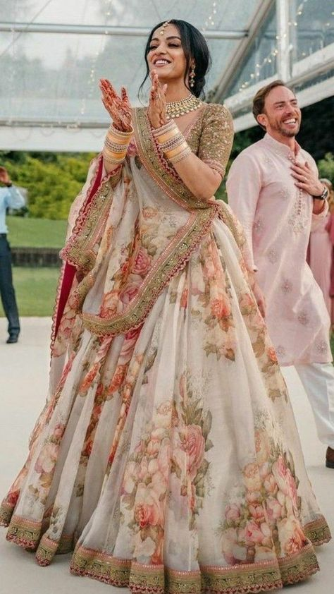

Women's Collection
Dresses

The fit and flare dress is a style that is characterized by a fitted bodice and a flared skirt.

A cape dress is a chic and sophisticated style that combines the elegance of a dress with the dramatic flair of a cape.

A ball gown dress is the epitome of formal elegance and glamour, traditionally worn to events such as balls, galas, and formal weddings.

A kaftan dress is a loose, flowing garment traditionally worn in various cultures, particularly in the Middle East and North Africa.

A bouffant dress is a style known for its voluminous, puffed-out skirt that creates a dramatic and elegant silhouette.

A balloon dress is a distinctive fashion style characterized by its voluminous, balloon-shaped silhouette.

A sundress is a lightweight, casual dress designed for warm weather.

An apron dress is a versatile and practical garment that draws inspiration from traditional aprons.

A bodycon dress, short for "body-conscious dress," is a form-fitting garment designed to hug the body's curves and showcase the wearer's silhouette.

A drop waist dress is a stylish garment characterized by a lowered waistline that sits at the hips rather than the natural waist.
Desi Style

A palazzo lehenga features a palazzo-style bottom paired with a cropped blouse or choli and a dupatta (scarf) for a complete ensemble that blends traditional and contemporary elements seamlessly.

An Anarkali kurta paired with palazzo pants creates a stylish fusion ensemble that combines elements of traditional and contemporary Indian fashion.

A jacket gown is a stylish and versatile ensemble that combines the elegance of a gown with the sophistication of a jacket.

An Anarkali set typically refers to a coordinated ensemble consisting of an Anarkali kurta, bottoms (such as leggings or churidar pants), and a dupatta (scarf).

Peplum lehengas are popular choices for bridesmaids, wedding guests, and other festive occasions where a sophisticated and fashion-forward look is desired.

Pairing an ethnic skirt with a shirt offers a versatile and contemporary approach to ethnic wear, allowing you to express your style while honouring cultural traditions.
A lehenga is a traditional Indian skirt typically worn by women for special occasions such as weddings, festivals, and celebrations.

A gharara suit is a traditional outfit originating from the Indian subcontinent, particularly popular in regions such as North India and Pakistan.